Are You Normal? Hint: No.#
Probably Overthinking It is available from Bookshop.org and Amazon (affiliate links).
Click here to run this notebook on Colab.
What does it mean to be normal? And what does it mean to be weird? I think there are two factors that underlie our intuition for these ideas:
“Normal” and “weird” are related to the idea of average. If by some measurement you are close to the average, you are normal; if you are far from the average, you are weird.
“Normal” and “weird” are also related to the idea of rarity. If some ability or characteristic of yours is common, it is normal; if it’s rare, it’s weird.
Intuitively, most people think that these things go together; that is, we expect measurements close to the average to be common, and measurements far from average to be rare.
For many things this intuition is valid. For example, the average height of adults in the United States is about 170 cm. Most people are close to this average: about 64% of adults are within 10 cm plus or minus; 93% are within 20 cm. And few people are far from average: only 1% of the population is shorter than 145 cm or taller than 195 cm.
missing
Technical note#
The numbers in the previous paragraph come from the Behavioral Risk Factor Surveillance System (BRFSS). Here is the notebook I used to download and clean the data.
I generated a sample from the dataset, which we can download like this:
brfss = pd.read_hdf("brfss_sample.hdf", "brfss")
height = brfss["HTM4"]
height.describe()
count 375271.000000
mean 170.162448
std 10.921335
min 91.000000
25% 163.000000
50% 170.000000
75% 178.000000
max 234.000000
Name: HTM4, dtype: float64
But what is true when we consider a single characteristic turns out to be partly false when we consider a few characteristics at once, and spectacularly false when we consider more than a few. In fact, when we consider the many ways people are different, we find that
People near the average are rare or non-existent,
Everyone is far from average, and
Everyone is roughly the same distance from average.
At least in a mathematical sense, no one is normal, everyone is weird, and everyone is the same amount of weird.
To show why this is true, we’ll start with a single measurement and work our way up to hundreds, and then thousands. I’ll introduce the Gaussian curve, and we’ll see that it fits many of these measurements remarkably well.
In addition to physical measurements from a survey of military personnel, we’ll also consider psychological measurements, using survey results that quantify the Big Five personality traits.
Present… Arms#
How tall are you? How long are your arms? How far is it from the radiale landmark on your right elbow to the stylion landmark on your right wrist?
You might not know that last one, but the U.S. Army does. Or rather, they know the answer for the 6068 members of the armed forces they measured at the Natick Soldier Center (just a few miles from my house) as part of the Anthropometric Surveys of 2010-2011, which is abbreviated army-style as ANSUR-II.
In addition to the radiale-stylion length of each participant, the ANSUR dataset includes 93 other measurements “chosen as the most useful ones for meeting current and anticipated Army and [Marine Corps] needs.” The results were declassified in 2017 and are available to download.
We will explore all of the measurements in this dataset, starting with height. The following figure shows the distribution of heights for the male and female participants in the survey.
Here’s the ANSUR data, originally downloaded from The OPEN Design Lab.
Since heights are in mm, I converted to cm.
The following function plots histograms using plt.stairs.
Here are the histograms of male and female heights.
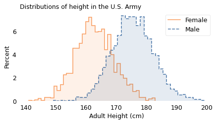
The vertical axis shows the percentage of participants whose height falls in each one-centimeter interval. Both distributions have the characteristic shape of the “bell curve”.
One of the earliest discoveries in the history of statistics is that there is a simple model that matches the shape of these curves with remarkable accuracy. Written as a mathematical formula it might not seem simple, depending on how you feel about the Greek alphabet. So instead I will describe it as a game.
Please think of a number (but keep it small) and let’s call it \(x\). Then follow these steps:
Square your number. For example, if you chose 2, the result is 4.
Take the result from the previous step and raise 10 to that power. If you chose 2, the result is \(10^{4}\), which is 10,000.
Take that result and invert it. If you chose 2, the result is \(1 / 10,000\).
Now I’ll do the same calculation for a range of values from -2 to 2 and plot the results. Here’s what it looks like:
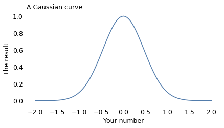
This result is known as the Gaussian curve, after the mathematician Carl Friedrich Gauss. Actually, it’s just one of many Gaussian curves. By changing the rules of the game we just played, we can shift the curve to the right or left, and make it wider or narrower. And by shifting and stretching, we can often find a Gaussian curve that’s a good match for real data.
In the following figure, the shaded areas show the distributions of height again; the lines show Gaussian curves I chose to match the data.
The following function plots a Gaussian curve with the same mean and std as the data.
The scale parameter is arbitrary – I chose it to be roughly the same height as the histogram, which is also arbitrary. Avoiding this arbitrariness is one reason I prefer to use CDFs to compare the distribution of data with a model.
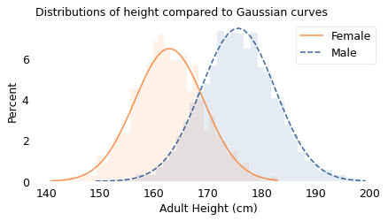
And they fit the data pretty well. If you have seen results like this before, they might not surprise you; but maybe they should.
Mathematically, the Gaussian curve is simple. The operations we used to compute it – squaring, raising to a power, and inverting numbers – are familiar to people with a basic math education.
In contrast, people are complicated. Nearly everything about us is affected by hundreds or thousands of interacting causes and effects, including our genes and everything about our environment from conception to adulthood.
So if we measure a few thousand people and plot the results, and find that they fit a simple model so well, we should be surprised.
Furthermore, it’s not just people and it’s not just height. If you choose individuals from almost any species and measure almost any part of them, the distribution of measurements will be approximately Gaussian. In many cases, the approximation is remarkably close. Naturally, you might wonder why.
Why?#
The answer comes in three parts:
Physical characteristics like height depend on many factors, both genetic and environmental.
The contribution of these factors tends to be additive; that is, the measurement is the sum of many contributions.
In a randomly-chosen individual, the set of factors they have inherited or experienced is effectively random.
When we add up the contributions of these random factors, the resulting distribution tends to follow a Gaussian curve.
To show that that’s true, I will use a model to simulate random factors, generate a set of random heights, and compare them to the measured heights of the participants in the ANSUR dataset.
In my model, there are 20 factors that influence height. That’s an arbitrary choice; it would also work with more or fewer.
For each factor, there are two possibilities, which you can think of as different genes or different environmental conditions. To model an individual, I generate a random sequence of 0s and 1s that indicate the absence or presence of each factor. For example:
If there are two forms of a gene (known as alleles), 0 might indicate one of the alternatives, and 1 the other.
If a particular nutrient contributes to height at some point in development, 0 and 1 might indicate the deficiency or sufficiency of the nutrient.
If a particular infection can detract from height, 0 and 1 might indicate the absence or presence of the infectious agent.
In the model, the contribution of each factor is a random value between -3 cm and 3 cm; that is, each factor causes a person to be taller or shorter by a few centimeters.
To simulate a population, I generate random factors (0s and 1s) for each individual, look up the contribution of each factor and add them up. The result is a sample of simulated heights, which we can compare to the actual heights in the dataset.
The following figure shows the results. The shaded areas show the distributions of the actual heights again; the lines show the distributions of the simulated heights.
The following function generates simulated values that are the sum of a number of random factors, shifted and scaled so they have the same mean and std as the given data.
The result shows that values generated this way can resemble the actual data.
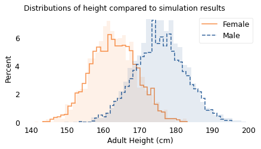
The results from the simulation are a good fit for the data. Before I ran this simulation, I had a pretty good idea what the results would look like because of the Central Limit Theorem, which states that the sum of a large number of random values follows a Gaussian distribution. Mathematically, the theorem is only true if the random values come from the same distribution and they are not correlated with each other.
Of course, genetic and environmental factors are more complicated than that. In reality, some contributions are bigger than others, so they don’t all come from the same distribution. Also, they are likely to be correlated with each other. And their effects are not purely additive; they can interact with each other in more complicated ways.
However, even when the requirements of the Central Limit Theorem are not met exactly, the combined effect of many factors will be approximately Gaussian as long as:
None of the contributions are much bigger than the others,
The correlations between them are not too strong,
The total effect is not too far from the sum of the parts.
Many natural systems satisfy these requirements, which is why so many distributions in the world are approximately Gaussian.
Comparing Distributions#
So far, I have represented distributions using histograms, which show a range of possible values on the horizontal axis and percentages on the vertical axis. Before we go on, I want to present another way to visualize distributions that is particularly good for making comparisons. This visualization is based on percentile ranks.
If you have taken a standardized test, you are probably familiar with percentile ranks.
For example, if your percentile rank is 75, that means that you did as well as or better than 75% of the people who took the test.
Or if you have a child, you might be familiar with percentile ranks from a pediatric growth chart. For example, a 2-year-old boy who weighs 11 kg has percentile rank 10, which means he weighs as much or more than 10% of children his age.
Computing percentile ranks is not hard. For example, if a female participant in the ANSUR survey is 160 cm tall, she is as tall or taller than 34% of the female participants, so her percentile rank is 34. If a male participant is 180 cm, he is as tall or taller than 75% of the male participants, so his percentile rank is 75.
If we compute the percentile rank for each participant the same way, and plot these percentile ranks on the vertical axis, the results look like this:
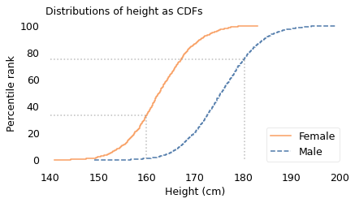
This way of representing a distribution is called a cumulative distribution function (CDF). In this example, the solid curve shows the CDF of height for female participants; the dashed curve is the CDF for male participants.
The dotted lines indicate the height and percentile rank for two examples: in the CDF for female participants, height 160 cm corresponds to percentile rank 34; in the CDF for male participants, height 180 cm corresponds to percentile rank 75.
It might not be obvious yet why this way of plotting distributions is useful. The primary reason, in my opinion, is that it provides a good way to compare distributions.
For example, in the following figure, the lines show the CDFs of height again. The shaded areas show the CDFs of Gaussian distributions I chose to fit the data.
The width of the shaded areas shows how much variation we expect if we use the Gaussian model to generate simulated heights. Where a line falls inside the shaded area, the data are consistent with the Gaussian model. If it falls outside the shaded area, that indicates a deviation bigger than we would expect to see due to random variation. In these examples, both curves fall within the bounds of variation we expect.
Before we go on, I want to say something about the word “deviation” in this context, which is used to mean a difference between the data and the model. There are two ways to think about “deviation”. One, which is widespread in the history of statistics and natural philosophy, is that the model represents some kind of ideal, and if the world fails to meet this ideal, the fault lies in the world, not the model.
In my opinion, this is nonsense. The world is complicated. Sometimes we can describe it with simple models, and it is often useful when we can. And sometimes we can find a reason the model fits the data, which can help explain why the world is as it is. But when the world deviates from the model, that’s a problem for the model, not a deficiency of the world.
Having said all that, let’s see how big those deviations are.
How Gaussian Is It?#
Out of 94 measurements in the ANSUR dataset, 93 are well modeled by a Gaussian distribution; one is not. In this chapter we’ll explore the well behaved measurements. In Chapter~\ref{extremes-outliers-and-goats} I’ll reveal the exception.
For each measurement, I chose the Gaussian distribution that best fits the data and computed the maximum vertical distance between the CDF of the data and the CDF of the model. Using the size of this deviation, I identified the measurements that are the most and the least Gaussian.
For many of the measurements, the distributions are substantially different for men and women, so I considered measurements from male and female participants separately.
Here are the names of the measurements.
To find the measurements that fit a Gaussian model the best and the worst, I use the following function, which computes the maximum vertical distance between the CDF of the data and the model.
The following function computes this distance for all of the measurements.
Now we can make a list of results for all measurements, male and female.
Here are the measurements where the distance between the data and the model is smallest.
And here are the measurements where it’s the biggest.
Most of the best-fitting measurements are male, most of the worst-fitting are female. That’s because the sample size is smaller for the female participants, which means there is more deviation from the model due to chance.
Of all measurements, the one that is the closest match to the Gaussian distribution is the popliteal height of the male participants, which is the “vertical distance from a footrest to the back of the right knee.” The following figure shows the distribution of these measurements as a dashed line and the Gaussian model as a shaded area.
To quantify how well the model fits the data, I computed the maximum vertical distance between them; in this example, it is 0.8 percentile ranks, at the location indicated by the vertical dotted line. The deviation is not easily discernible.
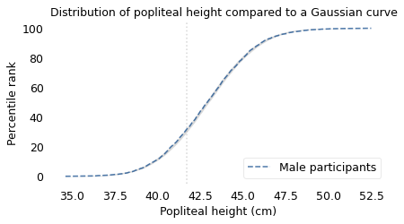
The measurement that is the worst match to the Gaussian model is the forearm length of the female participants, which is the distance I mentioned earlier between the radiale landmark on the right elbow and the stylion landmark on the right wrist.
The following figure shows the distribution of these measurements and a Gaussian model. The maximum vertical distance between them is 4.2 percentile ranks, at the location indicated by the vertical dotted line; it looks like there are more measurements between 24 and 25 cm than we would expect in a Gaussian distribution.
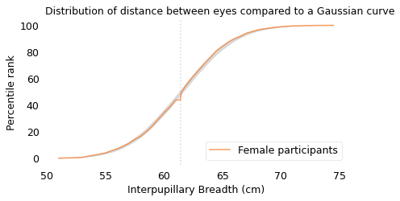
Out of almost 200 measurements, this is the one that is the least well modeled by the Gaussian distribution; even so, the deviation is small, and for many purposes, the Gaussian model would be good enough.
What I reported in the book is radialestylionlength, which is second on the list and seems to be legitimately the measurement that is the worst fit for the model.
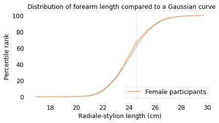
The Myth of the “Average Man”#
We’ve seen that variation in physical characteristics is often well modeled by a Gaussian distribution. A characteristic of these distributions is that most people are close to the mean, with fewer and fewer people far from the mean in either direction. But as I said in the introduction of this chapter: what is true when we consider a single characteristic turns out to be counter-intuitively false when we consider a few characteristics at once, and spectacularly false when we consider more than a few. In particular, when we consider the many ways each individual differs from the average, we find that people close to average in every way are rare or non-existent.
This observation was made most famously by Gilbert Daniels in a Technical Report he wrote for the U.S. Air Force in 1952, with the title “The ‘Average Man?’”. In the introduction he explains:
The tendency to think in terms of the “average man” is a pitfall into which many persons blunder when attempting to apply human body size data to design problems. Actually, it is virtually impossible to find an “average man” in the Air Force population.
As evidence, he used data from the Air Force Anthropometric Survey of 1950, a precursor of the ANSUR dataset we’ve used in this chapter. This dataset includes 131 measurements from 4063 Air Force “flying personnel”, all male. From these, Daniels selected 10 measurements “useful in clothing design”. Coyly, he mentions that we would get similar results if we chose measurements useful in airplane cockpit design, which was the actual but unstated purpose of the report.
Daniels finds that of the 4063 men, 1055 were of “approximately average” height, which he defines to be within the “middle 30% of the total population”. Of those, 302 were of approximately average chest circumference. Of those, 143 were of approximately average sleeve length.
He continues, filtering out anyone who falls outside the middle 30% of the population by any of the other measurements. In the end, he finds 3 who make it past the first eight measurements, 2 who make it past the first nine, and 0 who were approximately average on all ten. If a uniform – or cockpit – was designed to fit the average man on all 10 measurements, it would fit no one.
Daniels suggests that “conclusions similar to those reported here would have been reached if the same type of analysis had been applied to body size data based on almost any group of people”. To see if he’s right, we’ll replicate his analysis using data from the participants in the ANSUR survey.
Many of the measurements in the ANSUR survey are the same as in the Air Force survey, but not all. Of the ten Daniels chose, I found eight identical measurements in the ANSUR dataset and two replacements that are similar.
Here are the measurements from ANSUR that are the closest to the measurements in Daniels’s report.
The following table shows the names of these measurements, the mean and standard deviations of the values, the low and high ends of the range considered “approximately average”, and the percentage of survey participants who fall in the range.
You might notice that these percentages are lower than the 30% Daniels claims. In an appendix, he explains that he used “a range of plus or minus three-tenths of a standard deviation” from the mean. He chose this range because it seemed “reasonable” to him and because it is the “equivalent of a full clothing size”. To reproduce his analysis, I followed the specification in the appendix.
| Measurement | Mean | Std Dev | Low | High | % in range |
|---|---|---|---|---|---|
| Stature (height) | 175.6 | 6.9 | 173.6 | 177.7 | 23.2 |
| Chest Circumference | 105.9 | 8.7 | 103.2 | 108.5 | 22.9 |
| Sleeve Length | 89.6 | 4.0 | 88.4 | 90.8 | 23.1 |
| Crotch Height | 84.6 | 4.6 | 83.2 | 86.0 | 22.1 |
| Vertical Trunk Circ. | 166.5 | 9.0 | 163.8 | 169.2 | 24.2 |
| Hip Breadth Sitting | 37.9 | 3.0 | 37.0 | 38.8 | 24.8 |
| Neck Circumference | 39.8 | 2.6 | 39.0 | 40.5 | 25.2 |
| Waist Circumference | 94.1 | 11.2 | 90.7 | 97.4 | 22.1 |
| Thigh Circumference | 62.5 | 5.8 | 60.8 | 64.3 | 24.9 |
| Crotch Length | 35.6 | 2.9 | 34.7 | 36.5 | 22.1 |
Here are the measurements where there are the biggest differences between the Daniels dataset and the ANSUR dataset (you can ignore the two very large differences, which are the result of using measurements that are defined differently).
The other differences suggest that members of the Army and Marines now are bigger than members of the Air Force in 1950.
The following cells replicate the analysis in Daniels, computing the number of people who are close to the average in each measurement, considered in succession.
Now we can replicate Daniels’s analysis using the measurements as “hurdles in a step-by-step elimination”, starting from the top of the table and working down.
Of 4086 male participants, 949 are approximately average in height. Of those, 244 are approximately average in chest circumference. Of those, 87 are approximately average in sleeve length.
Approaching the finish line, we find 3 participants that make it past eight “hurdles”, 2 that make it past nine, and 0 that make it past all ten. Remarkably, the results from the last three hurdles are identical to the results from Daniels’s report. In the ANSUR dataset, if you design for the “average man”, you design for no one.
The same is true if you design for the average woman. The ANSUR dataset includes fewer women than men: 1986 compared to 4086. So we can use a more generous definition of “approximately average”, including anyone within 0.4 standard deviations of the mean.
Even so, we find only 2 women who make it past the first eight hurdles, 1 who makes it past nine, and none that make it past all ten.
So we can confirm Daniels’s conclusion (with a small update):
The “average [person]” is a misleading and illusory concept as a basis for design criteria, and is particularly so when more than one dimension is being considered.
And this is not only true for physical measurements, as we’ll see in the next section.
The Big Five#
Measuring physical characteristics is relatively easy; measuring psychological characteristics is more difficult. However, starting in the 1980s, psychologists developed a taxonomy based on five personality traits and surveys that measure them. These traits, known as the “Big Five”, are: extroversion, emotional stability, agreeableness, conscientiousness, and openness to Experience.
Emotional stability is sometimes reported on a reversed scale as “neuroticism”, so high emotional stability corresponds to low neuroticism. In psychological literature, “extroversion” is often written as “extraversion”, but I will use the common spelling.
These traits were initially proposed, and gradually refined, with the goal of satisfying these requirements:
They should be interpretable in the sense that they align with characteristics people recognize in themselves and others. For example, many people know what extroversion is and have a sense of how they compare to others on this scale.
They should be stable in the sense that they are mostly unchanged over a person’s adult life, and consistent in the sense that measurements based on different surveys yield similar results.
The traits should be mostly uncorrelated with each other, which indicates that they actually measure five different things, not different combinations of a smaller number of things.
They do not have to be complete; that is, there can be (and certainly are) other traits that are not measured by surveys of the Big Five.
At this point, the Big Five personality traits have been studied extensively and found to have these properties, at least to the degree we can reasonably hope for.
You can take a version of the Big Five Personality Test, called the International Personality Item Pool (IPIP) online. This test is run by the Open-Source Psychometrics Project, which “exists for the promotion of open source assessments and open data”. In 2018 they published anonymous responses from more than one million people who took the test and agreed to make their data available for research.
Some people who took the survey did not answer all of the questions; if we drop them, we have data from 873,173 who completed the survey. It is possible that dropping incomplete tests will disproportionately exclude people with low Conscientiousness, but let’s keep it simple.
The Big Five data is originally from the Open-Source Psychometrics Project.
Here is the notebook I used to download and clean the data.
I did some preliminary cleaning and put the result in an HDF file.
The survey consists of 50 questions, with 10 questions intended to measure each of the five personality traits. For example, one of the prompts related to extroversion is “I feel comfortable around people;” one of the prompts related to emotional stability is “I am relaxed most of the time.” People respond on a five-point scale from “Strongly Disagree” to “Strongly Agree”. I scored the responses like this:
“Strongly agree” scores 2 points.
“Agree” scores 1 point,
“Neutral” scores 0 points,
“Disagree” scores -1 point, and
“Strongly disagree” scores -2 points.
For some questions, the scale is reversed; for example, if someone strongly agrees that they are “quiet around strangers,” that counts as -2 points on the extroversion score.
Since there are 10 questions for each trait, the maximum score is 20 and the minimum score is -20. For each of the five traits, the following figure shows the distributions of total scores for more than 800,000 respondents.
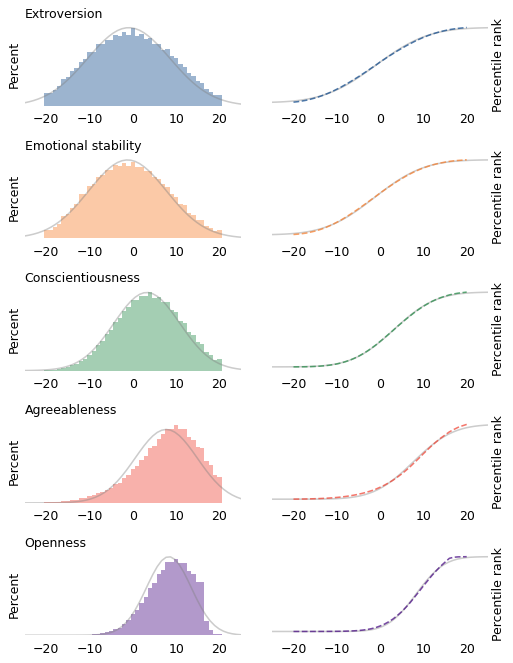
The figures on the left show histograms; the figures on the right show CDFs. In both figures, the shaded line is a Gaussian distribution I chose to fit the data. The Gaussian model fits the first three distributions well (extroversion, emotional stability, and conscientiousness) except in the extreme tails.
The other two distributions are skewed to the left; that is, their tails extend farther left than right. It’s possible that these deviations from the Gaussian model are the result of measurement error. In particular, agreeableness and openness might be subject to social desirability bias, which is the tendency of survey respondents to shade their answers to questions like these in the direction they know is more socially acceptable.
For example, two of the prompts related to agreeableness are “I am not interested in other people’s problems,” and “I insult people.” It’s possible that even callous, abrasive people are sensitive enough to avoid admitting these faults.
Similarly, two of the prompts related to openness are “I use difficult words,” and “I have excellent ideas.” It’s possible that some people with a limited vocabulary are mistaken about the quality of their ideas.
On the other hand, it seems like at least some unconscientious people are willing to admit that “I leave my belongings around,” and “I shirk my duties.” So it may be that these measurements reflect actual distributions of these attributes in the population, and it just happens that those distributions are not very Gaussian.
Regardless, let’s see what happens if we apply Daniels’s analysis to the Big Five data. The following table shows the mean and standard deviation of the five scores, the range of values we’ll consider “approximately average”, and the percentage of the sample that falls in that range.
| Trait | Mean | Std Dev | Low | High | % in range |
|---|---|---|---|---|---|
| Extroversion | -0.4 | 9.1 | -3.1 | 2.3 | 23.4 |
| Emotional stability | -0.7 | 8.6 | -3.2 | 1.9 | 20.9 |
| Conscientiousness | 3.7 | 7.4 | 1.4 | 5.9 | 20.2 |
| Agreeableness | 7.7 | 7.3 | 5.5 | 9.9 | 21.1 |
| Openness | 8.5 | 5.2 | 7.0 | 10.1 | 28.3 |
For each trait, the “average” range contains 20-28% of the population. Now if we treat each trait as a hurdle and select people who are close to average on each one, the following table shows the results.
| Trait | Counts | Percentages |
|---|---|---|
| Extroversion | 204077 | 23.4 |
| Emotional stability | 46988 | 5.4 |
| Conscientiousness | 10976 | 1.3 |
| Agreeableness | 2981 | 0.3 |
| Openness | 926 | 0.1 |
The first column shows the number of people who make it past each hurdle; the second column shows the percentages.
Of the 873,173 people we started with, about 204,000 are close to the average in extroversion. Of those, about 47,000 are close to the average in emotional stability. And so on, until we find 926 who are close to average on all five traits, which is barely one person in a thousand.
As Daniels showed with physical measurements, we have shown with psychological measurements: when we consider more than a few dimensions, people who are close to the average are rare or nonexistent. In fact, nearly everyone is far from average by some measure.
But that’s not all. If we consider a large number of measurements, it’s not just that everyone is far from average; it turns out that everyone is approximately the same distance from average. We’ll see why in the next section.
We Are All Equally Weird#
How weird are you? One way to quantify that is to count the number of measurements where you are far from average.
For example, using the Big Five data again, I counted the number of traits where each respondent falls outside the range we defined as “approximately average”. We can think of the result as a kind of “weirdness score”, where 5 means they are far from average on all five traits, and 0 means they are far from average on none.
The following figure shows the distribution of these scores for the roughly 800,000 people who completed the Big Five survey.
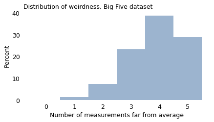
As we’ve already seen, very few people are close to average on all five traits. Almost everyone is weird in two or more ways, and the majority (68%) are weird in four or five ways!
The distribution of weirdness is similar with physical traits. Using the 93 measurements in the ANSUR dataset, we can count the number of ways each participant deviates from average. The following figure shows the distribution of these counts for the male ANSUR participants.
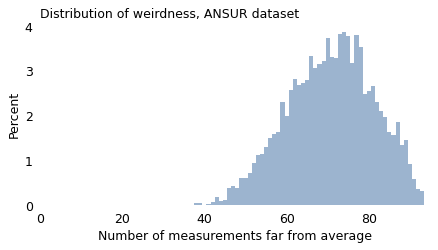
Nearly everyone in this dataset is “weird” in at least 40 ways, and 90% of them are weird in at least 57 ways. With enough measurements, being weird is normal.
In fact, as the number of measurements increases, the width of this distribution gets narrower; that is, the difference between the most normal person and the weirdest gets smaller.
To demonstrate, I’ll use the ANSUR measurements to compute all possible ratios of two measurements. Some of these ratios are more meaningful than others, but at least some of them are features that affect clothing design (like the ratio of waist circumference to chest circumference), cockpit design (like the ratio of arm length to leg length), or perceived attractiveness (like the ratio of face width to face height).
With 93 measurements and 4278 ratios, there are a total of 4317 ways to be weird. The following figure shows the distribution of weirdness scores for the male participants.
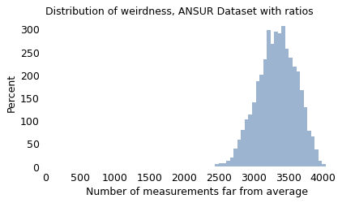
With these measurements, all participants fall in a relatively narrow range of weirdness. The most “normal” participant deviates from average in 2446 ways; the weirdest in 4038 ways.
Now, you might notice that the distribution of this weirdness score has the characteristic shape of a Gaussian curve, and that is not a coincidence. Mathematically, as the number of measurements increases, the distribution of weirdness converges to a Gaussian distribution and the width of the distribution gets narrower. In the limit, if we consider the nearly infinite ways people vary, we find that we are all equally weird.
But Some Are More Equal Than Others#
In some ways, this chapter is a feel good story. If at times in your life you have felt different, you are not alone; everyone is different in many ways. And if you think you’re normal and other people aren’t, you are wrong on both counts.
But the real world is not like the mathematical world, and I want to be careful not to push this point too far. The idea that we are all equally weird is only true if the different ways of being different are treated the same. And that’s not the case.
Considering the measurements in this chapter, some are more visible than others. If your menton-sellion length is in the 90th percentile, people will notice your long face, and if you are a famous actress, Seth MacFarlane will make fun of it. But if your lateral malleolus height is in the 90th percentile, you were probably not teased as a child because your ankle bone is unusually far from the ground.
Among personality traits, some kinds of variation are met more favorably than others. For the most part, we accept introversion and extroversion as equally valid ways to be, but some of the other traits are more laden with value judgments. In general, we consider it better to be conscientious than unreliable, and better to be agreeable than obnoxious.
Also, the world is designed to handle some kinds of variation better than others. For example, while introversion might not be considered a moral failing, many introverts find that school and work environments reward extroversion more than might be merited.
The world handles some kinds of physical variation better than others, too. In Invisible Women, Caroline Criado Perez writes about many ways our built environment, designed primarily with men in mind, does not always fit women. Safety features in cars, tested on crash dummies with male proportions, protect women less effectively. Many smartphones are difficult to use one-handed if your hands are smaller than average. And, as more than half of the population discovered during the COVID-19 pandemic, a lot of personal protective equipment (PPE) is “based on the sizes and characteristics of male populations from certain countries in Europe and the United States. As a result, most women, and also many men, experience problems finding suitable and comfortable PPE,” according to the Trades Union Congress in the United Kingdom.
Furthermore, the way I defined a “weirdness score” is too blunt. To be consistent with Daniels’s analysis, I consider only two categories: approximately average or not. In reality, our ability to handle variation has many levels. If you are a little taller or shorter than average, you have to adjust your car seat, but you might not even notice the inconvenience. But if you are too short to stand behind a “standard” lectern, or too tall to walk through a door without ducking, you will notice that the world is not designed for you. And at greater extremes, when the mismatch between you and the world makes common tasks difficult or impossible, we call it a disability – and implicitly put the blame on the person, not the built environment.
So, when I say we are all equally weird, my intent is to point out the ways variability defies our intuitive concepts of “normal” and “weird”. I don’t mean to say that the world treats us as equally weird; it doesn’t.